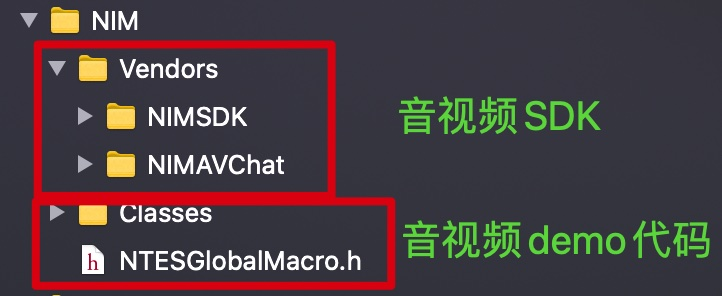
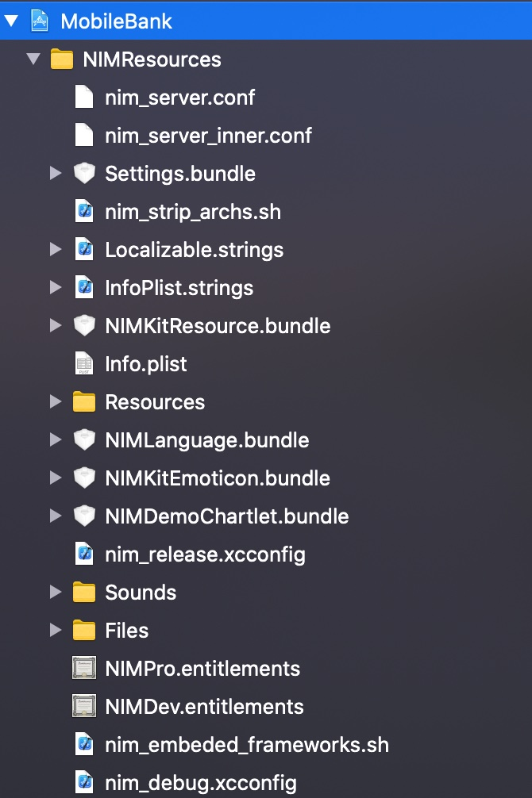
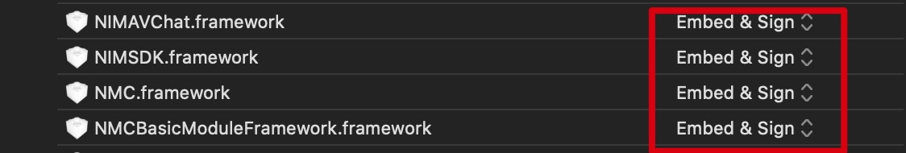
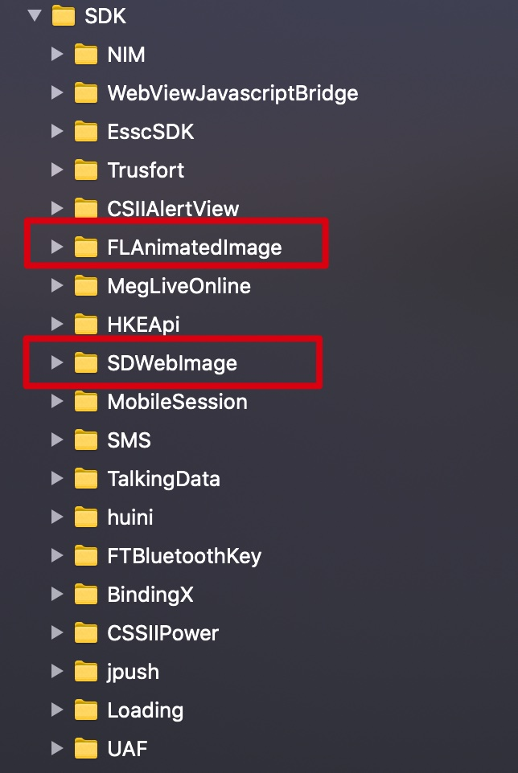
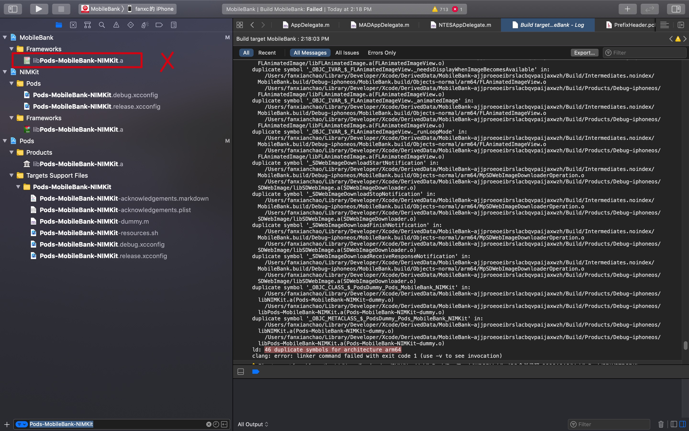

【原创】作者：范献超
接入步骤
1. 接入NIMKit
- <1> 将NIMKit工程放在项目根目录
- <2> 通过
Add Files To xxx将NIMKit.xcodeproj放入工程目录 - <3> 在主工程引入NIMKit代码:
TARGETS->Build Settings->Header Search Paths增加$(SRCROOT)/NIMKit/NIMKit - <4> 在主工程
TARGETS->Build Phases->Link Binary With Libraries添加引入libNIMKit.a和libPods-xxx-NIMKit.a
2. 引入NIM
需要引入的音视频SDK及需要用到的部分demo代码
如图

3. 引入NIMSources
NIMSources为音视频demo需要的资源，需要放在主工程根目录

4. 配置pch文件
1 | #ifdef __OBJC__ |
5. 给NIM相关SDK配置Embed & Signed

问题记录
1. duplicate symbol ‘_OBJC_IVAR_$_xxx’

解决：
库冲突导致的问题
详细解释：
错误1
duplicate symbol '_OBJC_IVAR_$_FLAnimatedImage._weakProxy' in: /Users/fanxianchao/Library/Developer/Xcode/DerivedData/MobileBank-ajjproeoeibrslacbqvpaijaxwzh/Build/Intermediates.noindex/MobileBank.build/Debug-iphoneos/MobileBank.build/Objects-normal/arm64/FLAnimatedImage.o/Users/fanxianchao/Library/Developer/Xcode/DerivedData/MobileBank-ajjproeoeibrslacbqvpaijaxwzh/Build/Products/Debug-iphoneos/FLAnimatedImage/libFLAnimatedImage.a(FLAnimatedImage.o)主工程项目本地有FLAnimatedImage代码（
第三方源码，之前工程不应该使用这种方式引入第三方, 极易引起库冲突），与NIMSDK用到的FLAnimatedImage（pods 引入）发生冲突；经过与项目合作方确认，以及阅读代码，本地FLAnimatedImage代码未增加重要代码，可删除，所以删除本地第三方库源码即可问题解决。删除后相关报错代码做修改：CSIILogingGifView中image.loopCount = 0报错，可将他注释掉，查看FLAnimatedImage.h源码@property** (**nonatomic**, **assign**, **readonly**) NSUInteger loopCount; // 0 means repeating the animation indefinitely// 0意味着无限地重复动画。经过测试对loading动画无影响
错误2
duplicate symbol '_SDWebImageDownloadStopNotification' in:/Users/fanxianchao/Library/Developer/Xcode/DerivedData/MobileBank-ajjproeoeibrslacbqvpaijaxwzh/Build/Intermediates.noindex/MobileBank.build/Debug-iphoneos/MobileBank.build/Objects-normal/arm64/MpSDWebImageDownloaderOperation.o/Users/fanxianchao/Library/Developer/Xcode/DerivedData/MobileBank-ajjproeoeibrslacbqvpaijaxwzh/Build/Products/Debug-iphoneos/SDWebImage/libSDWebImage.a(SDWebImageDownloader.o)同上，主工程中手动引入SDWebImage，与pods中引入的冲突。删除本地SDWebImage，将主工程mpsd_setImageWithURL方法换成sd_setImageWithURL

错误3
duplicate symbol '_OBJC_CLASS_$_PodsDummy_Pods_MobileBank_NIMKit' in:/Users/fanxianchao/Library/Developer/Xcode/DerivedData/MobileBank-ajjproeoeibrslacbqvpaijaxwzh/Build/Products/Debug-iphoneos/libNIMKit.a(Pods-MobileBank-NIMKit-dummy.o)/Users/fanxianchao/Library/Developer/Xcode/DerivedData/MobileBank-ajjproeoeibrslacbqvpaijaxwzh/Build/Products/Debug-iphoneos/libPods-MobileBank-NIMKit.a(Pods-MobileBank-NIMKit-dummy.o)主工程本地libPods_MobileBank_NIMKit与NIMKit中的冲突，删除本地的libPods_MobileBank_NIMKit即可
